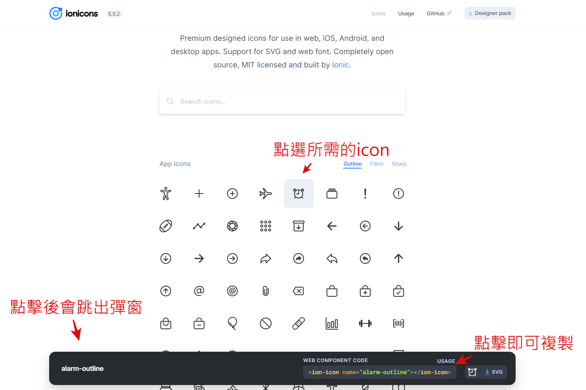
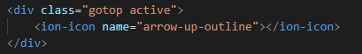

ionicons ioc插件
ionicons是一個全免費的icon插件，雖然種類不像fontawesome這麼多，但勝在有提供的icon都是純免費使用，不會有挑半天找到想要的icon卻發現是要付費的尷尬窘境。
安裝方法
ionicons的安裝方法非常簡單，只要載入它提供的兩個scriptCDN即可。
<script type="module" src="https://unpkg.com/ionicons@5.5.2/dist/ionicons/ionicons.esm.js"></script>
<script nomodule src="https://unpkg.com/ionicons@5.5.2/dist/ionicons/ionicons.js"></script>
以上script是放在body結束前。
使用方法
安裝都這麼簡單了，沒道理使用起來不直覺。
ionicons的使用方法只要在它提供的網頁找到想樣的icon點擊並複製它提供的標籤。
接下來只需要到想要放置icon的位置上貼上即可
就是這麼簡單。而若是要更改icon的大小及顏色等，都是使用字串的設定去調整，如font-size、color等。
以上就是這次的介紹，有任何問題都歡迎使用mail與我聯絡。